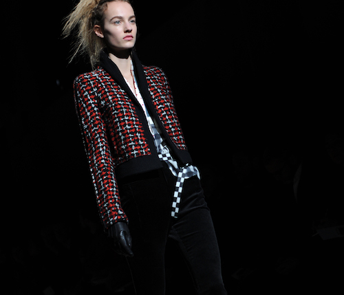
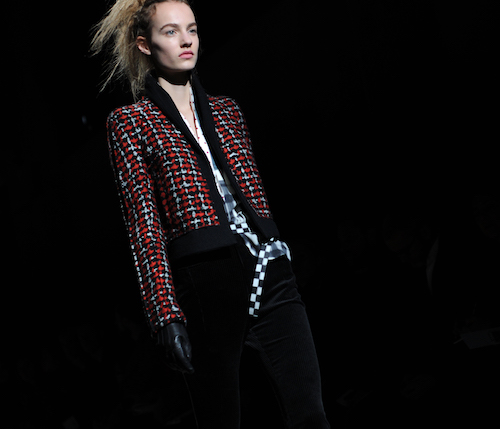

about the project
Paul apparait ici comme un poète plasticien, qui donne à voir dans son travail les dimensions poétiques et sensorielles de la mémoire, où il met en exergue, un souvenir, son investigation des choses, des lieux. Pour MEMORIES / NEXT LEVEL, Paul Mouginot expose ses pièces avec parcimonie et précision : 6 photos, 2 sculptures, une installation. Paul a un processus singulier : il observe son sujet, s’avance dans la contemplation du souvenir, le décortique, l’extrait, et le restitue couche par couche. Grands ensembles ou détails, acérés ou flous, ces éléments aux codes couleurs et textuels distincts sont la quintessence, le sensible. Il ne cesse de se rapprocher au plus près de son sujet : il le cadre, il le choisit, il le construit, il le met en scène, il superpose couleurs et matières. Le choix du papier, l’encadrement, achèvent d’enchâsser ces relique


 
